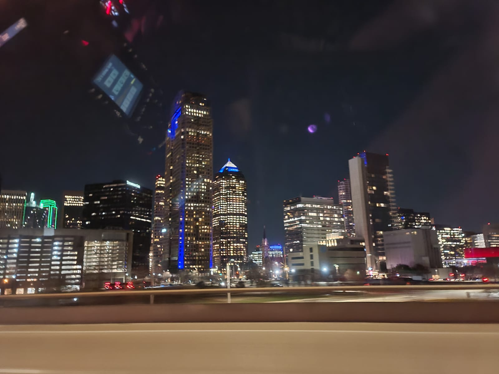
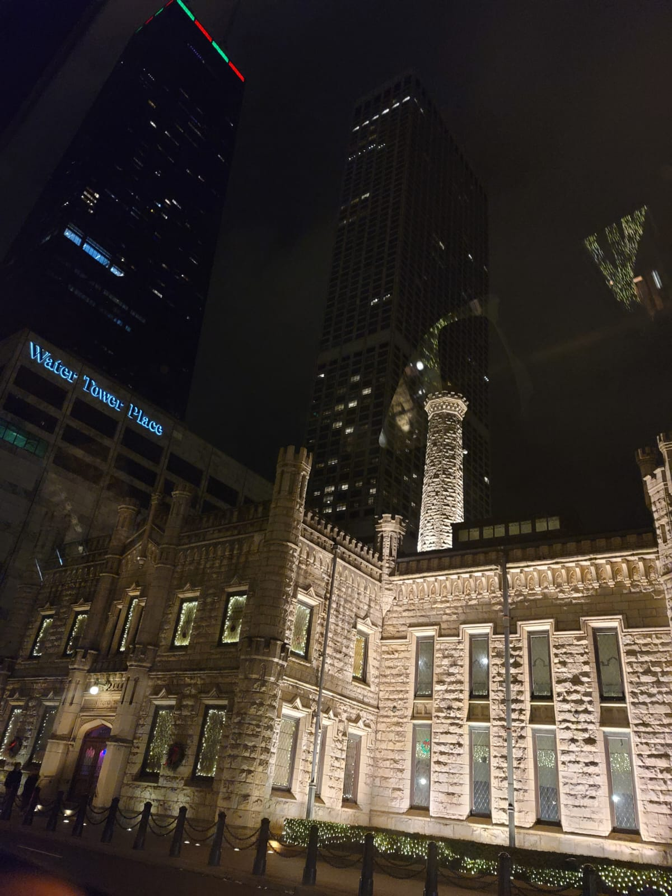

Hola mi nombre es Cristian Alberto Rodriguez Palafox matricula 2077814, actualemente estoy en la facultad estudiando mi carrera de ingeniero administrador de sistemas, lo que mas me gusta de mi carrera es aprender sobre computadoras, en los ultimos dias de enero del 2024 eh estado familiarizandome con el sistema operativo de las computadoras ya que, un familiar tiene un conocido que tiene otro conocido que tiene un taller de computadoras y no tengo la necesidad de ir cada cierto tiempo ya que lo puedo hacer desde mi casa, para instalar el sistema operativo primero se necesita tener la iso del Windows que quieras instalar, luego se bootea una memoria usb con un programa llamado rufus, tambien instalo los office y activo las licencias de office como para windows con un virus llamado kms tools. Se necesita apagar la computadora y luego insertamos la memoria usb, rapidamente se tiene que dar pulsos a f12 o depende de la computadora, entramos a la bios y entramos por la uefi, ya ahi borramos todo lo que tenga en la memoria y se lo volvemos a restauracion de fabrica, ya de ahi aceptar, no tengo internet (para que no tengas que poner correos ni nada de eso), omitir e instalamos los office.
En estos ultimos años e llegado a conocer muchas partes de nuestro continente.